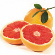
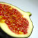
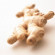
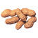
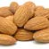
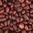
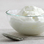

Продукты для похудения
Продукты для похудения, не добавят вам лишних килограммов, напротив они способствуют сжиганию жиров. Под продуктами, помогающими похудению, обычно скрываются привычные для нас продукты, о которых мы просто забываем иногда.
Американскими учеными был составлен список продуктов, употребление которых поможет сделать живот плоским. Включив их в рацион одновременно с ежедневными упражнениями на пресс, и спустя три недели вы обязательно увидите результат.
Какие продукты способствуют похудению?
|
ЯБЛОКИ И ГРУШИ
Яблоки и груши богаты пектином. Они идеально заполняют желудок, чем вызывают чувство сытости, и что немало важно практически при нулевой калорийности. Эти фрукты содержат многие необходимые витамины и минералы. Отлично подходят для перекуса. |
|
ГРЕЙПФРУТ ИЛИ ГРЕЙПФРУТОВЫЙ СОК
 Благодаря грейпфруту снижается уровень инсулина и из-за этого есть хочется меньше. Если после каждого приема пищи съедать пол грейпфрута или выпивать 150 мл грейпфрутового сока, то спустя две недели ваш вес уменьшиться на два кг. Горький привкус сока с лёгкостью можно разбавить апельсиновым соком. |
|
ИНЖИР
Инжир облегчает пищеварение, поскольку в нём большое количество ценных балластных веществ. Съев два-три инжира – этого достаточно для утоления чувства голода и при этом в нем мало калорий, а жира и вовсе нет. Также можно добавлять инжир в мюсли. |
|
ЦВЕТНОЙ САЛАТ
Смешав овощи разного цвета, у вас получится полезная пища, богатая витаминами и клетчаткой. Начиная обед с салата, который заправлен лимонным соком и капелькой растительного масла, у вас без лишних калорий заполнится желудок, оставив куда меньше места для пищи более калорийной. Это также способствует похудению. |
|
ИМБИРЬ
В состав имбиря входит вещество, которое из организма выводит шлаки, нормализует пищеварение и регулирует обмен веществ. Рецепт имбирного чая для похудения прост. Нужно залить кипятком одну чайную ложечку натертого имбиря, дать настояться, затем процедить. Корень имбиря улучшает секрецию желудка и его кровоснабжение, способствуя быстрому перевариванию пищи. А ускорение метаболизма помогает быстрее скинуть лишний вес. |
|
ЗЕЛЕНЫЙ ЧАЙ
Также способствует похудению зеленый чай. Ведь в его состав входят вещества, которые активно сжигают жиры. Азиатские диетологи утверждают, что следует выпивать четыре чашки зеленого чая в день. При сжигании жиров это даёт наибольший эффект. Считается, что если выпить зеленого чая в день пять чашек, то вы теряете примерно 70 - 80 калорий. Также зелёный чай предохраняет сосуды, сердце и предотвращает образование раковых клеток. Но не стоит его употреблять в большом количестве, так как он возбуждающе действует на нервную систему. |
|
ОСТРЫЕ ПРИПРАВЫ
Хорошо справляется со сжиганием жиров жгучий стручковый перец, а также все его разновидности, перец пеперони, черный молотый перец, горчица, хрен и все приправы тайской и индийской кухни. Каждый раз, добавляя в пищу, острые приправы мы становимся чуточку худее. Острая пища способствуют похудению, так как она ускоряет в организме производство энергии и сжигает избыточный жир, снижает показатели инсулина. К примеру, в перце чили содержится вещество под названием капсаицин. Это вещество растапливает лишние калории после окончания приёма еды в течение 20 минут. Если вам не по вкусу слишком острая пища, то удаляйте из перца зерна. Капсаицин – это вещество, которое придаёт остроту красному жгучему перцу, ускоряя обмен веществ в течение трех часов после еды, тем самым буквально растапливает клетки жира. |
|
АРАХИС
Арахис отлично подойдёт для перекусов перед основными приемами пищи. Ведь благодаря нему улучшается и ускоряется обмен веществ, а в жирных кислотах снижается уровень холестерина. Арахис довольно калорийный орех. В ста граммах арахиса содержится 560 калорий. Поэтому следует съедать около 10 орешков в день (50 грамм в день и не более, так как он тяжело переваривается из-за жиров). В арахисе содержится: 25% белков , 45% растительных жиров и 15% углеводов, также он богат витаминами группы B, РР и витамином D. Орехи очень полезны для организма и для того чтобы они способствовали похудению, есть их следует в малых количествах. |
|
МИНДАЛЬ
Миндаль – орех богатый витаминами, кальцием, фосфором, пищевыми волокнами, жирными кислотами и железом. Несмотря на повышенную жирность, этот орех способствует похудению, поскольку часть его жиров из организма выводится, минуя стадию расщепления и впитывания. Всего 25 орешков в день (это примерно тридцать граммов) сокращают число липидов и нормализуют в организме уровень холестерина, чем способствуют похудению. |
|
КЕДРОВЫЕ ОРЕШКИ
В кедровых орешках содержится пиноленовая кислота, идеально снижающая аппетит, помимо прочего в них самое большое количество насыщенных белков среди всех видов орехов. Обжаренные орешки прекрасно используются в качестве дополнения к овощным салатам или перекусам перед основными приемами пищи. |
|
ХОЛОДНЫЕ СУПЫ
Холодные супы содействуют похудению, так как они помогают расходовать калории. Холодной пище нужно сначала разогреться в желудке, следовательно, организму требуется затратить калории на разогрев, а затем и на переваривание пищи. Холодные супы прекрасно заполняют желудок, тем самым на длительное время насыщают организм. Холодный суп легко заменяется стаканом сока из овощей с зеленью, к примеру, на томатный. |
|
ОВОЩНОЙ СУП-ПЮРЕ
Если из белокочанной капусты или брокколи приготовить суп-пюре, при этом, не добавляя сливок, манки или муки, а добавив другие различные овощи (кроме картофеля), также специи и пряности, то такое диетическое блюдо поможет похудеть. Благодаря капустной клетчатке выводится холестерин и оздоравливается организм. |
|
ОБЕЗЖИРЕННЫЙ ТВОРОГ И ЙОГУРТ
В обезжиренном твороге или йогурте содержится много легкоусвояемого белка, что надолго насыщает организм. Переваривая белок, организм расходует больше калорий, нежели переваривая жиры и углеводы. Взбив творог с минеральной газированной водой, получится крем, который в дальнейшем можно намазать на тост. В итоге получится прекрасный низкокалорийный завтрак. Сегодня в магазинах огромный выбор продуктов, у которых низкое содержание жира. Поступая в организм полезный кальций, вырабатывает гормон, который заставляет худеть наши клеточки. Остановите свой выбор на несладком Йогурте без фруктовых добавок. Можно вместо сахара в йогурт положить щепоточку корицы. |
|
РЫБА
Едва ли для фигуры можно найти продукт по полезности превосходящий рыбу. Жирные сорта рыбы являются поставщиками в организм незаменимых жирных кислот Омега-3 и йода, которые заботятся о щитовидной железе и сердце. Также продукты из рыбы - это продукты способствующие похудению и сжиганию жиров. Большое влияние на процесс похудения оказывает способ приготовления рыбы. Рыбу лучше готовить на пару. Если у вас нет в наличии пароварки, то вам поможет дуршлаг, который следует поместить в кастрюлю, с малым количеством воды. Затем положите кусочки рыбы и накройте крышкой. К рыбе подойдёт зелень и приправы. Организм будет нескончаемо благодарен за подобную пищу, поскольку она легко переваривается и при этом не откладывается лишний жир. |
|
Поможет сжечь жиры и пища с высоким содержанием белков Белки являются основой при образовании мышечной массы. Чем выше у человека мышечная масса, тем больше жиров он сжигает, даже в состоянии покоя. К примеру, даже на отдыхе, человек, у которого мышц больше потратит большее количество калорий. Для лучшего усвоения белков, организму нужно также тратить большое количество калорий, нежели для усвоения жиров и углеводов. Таким образом, пища с повышенным содержанием белка способствует сжиганию жиров. Это основа многих диет. Примером является кремлевская диета. |